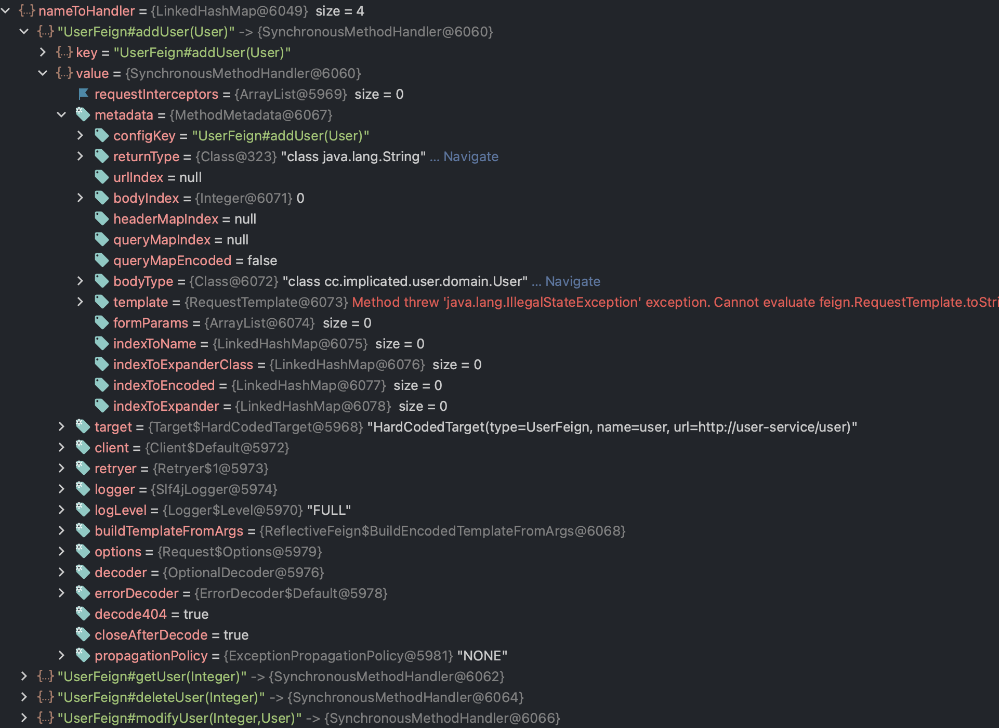
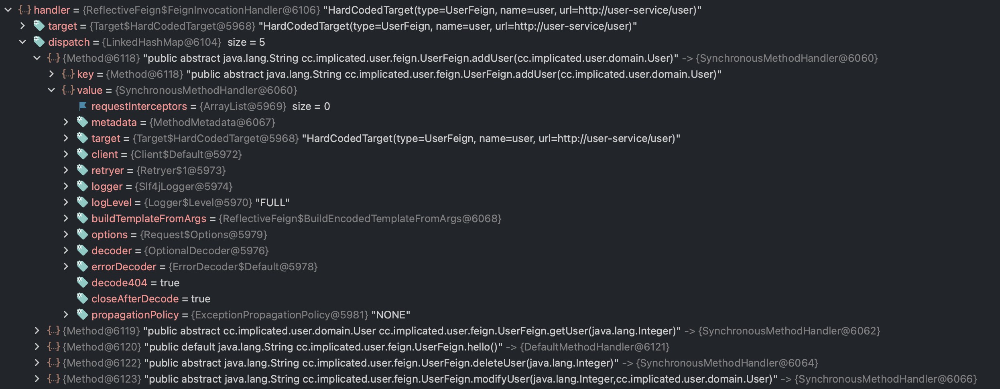
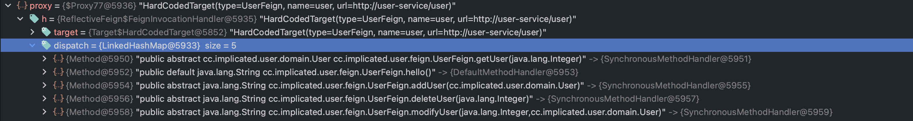
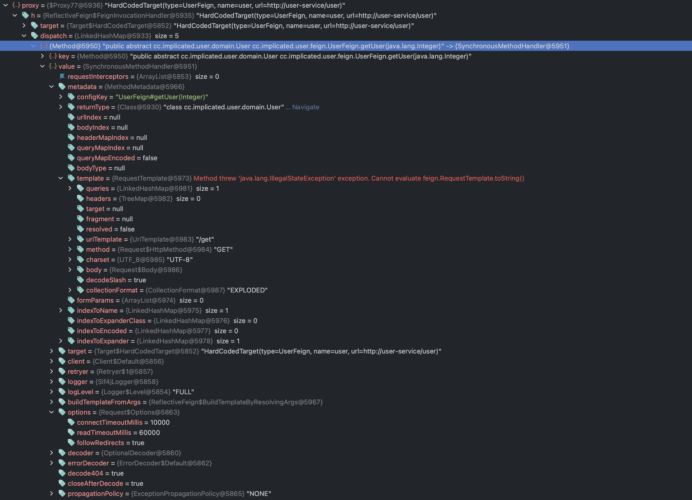

Feign 的核心流程
基本流程：
-
使用
JDK动态代理为每一个@FeignClient标记的接口生成代理类 -
生成代理类时为每个非默认方法添加了一个代理方法
-
最终执行代理类中的代理方法
核心类：
| ReflectiveFeign | SynchronousMethodHandler |
|---|---|

|

|
Feign 的入口方法
通过Feign.builder()生成Feign.Builder的构造者对象，然后设置相关的参数，再调用target方法构造出动态代理。
public abstract class Feign {
public static Builder builder() {
return new Builder();
}
public static class Builder {
//...
}
}构建 ReflectFeign
target 方法内部先调用 build 方法新建一个 ReflectFeign 对象，然后调用 ReflectFeign 的 newInstance 方法创建动态代理。
public <T> T target(Target<T> target) {
// spring-cloud-openfeign 注入最终执行方法，最后注入到 Spring 容器中的是接口的代理对象。
return build().newInstance(target);
}
public Feign build() {
// 调用处理器工厂，设置属性
SynchronousMethodHandler.Factory synchronousMethodHandlerFactory =
new SynchronousMethodHandler.Factory(client, retryer, requestInterceptors, logger,
logLevel, decode404, closeAfterDecode, propagationPolicy);
// 解析处理器handlersByName将所有参数进行封装，只有一个 apply 方法
ParseHandlersByName handlersByName =
new ParseHandlersByName(contract, options, encoder, decoder, queryMapEncoder,
errorDecoder, synchronousMethodHandlerFactory);
return new ReflectiveFeign(
handlersByName,
// InvocationHandlerFactory 控制反射方法的调度
invocationHandlerFactory, (1)
// QueryMapEncoder 按照 name 和 value 转换 object 到 map
queryMapEncoder); (2)
}| 1 | Builder 的属性，控制反射方法的调度，默认值是 InvocationHandlerFactory.Default() |
| 2 | Builder 的属性，接口参数注解 @QueryMap 时，参数的编码器，默认值是 QueryMapEncoder.Default() |
创建动态代理对象
ReflectiveFeign 有五个内部类：
| Inner Class | Description |
|---|---|
FeignInvocationHandler |
实现了 |
ParseHandlersByName |
解析处理程序 |
BuildTemplateByResolvingArgs |
实现了 |
BuildEncodedTemplateFromArgs |
继承 |
BuildFormEncodedTemplateFromArgs |
继承 |
ReflectiveFeign.newInstance 方法创建接口动态代理对象
// 构造器
ReflectiveFeign(ParseHandlersByName targetToHandlersByName,
InvocationHandlerFactory factory,
QueryMapEncoder queryMapEncoder) {
this.targetToHandlersByName = targetToHandlersByName;
this.factory = factory;
this.queryMapEncoder = queryMapEncoder;
}
// 构造器
@Override
public <T> T newInstance(Target<T> target) {
// 1.解析方法元数据
// targetToHandlersByName 是构造器传入的 ParseHandlersByName 对象
// 根据 target 对象创建方法名和方法处理器的 map 映射
Map<String, MethodHandler> nameToHandler = targetToHandlersByName.apply(target); (1)
// 方法处理器的 map 映射
Map<Method, MethodHandler> methodToHandler = new LinkedHashMap<Method, MethodHandler>();
// 默认方法处理器的 map 映射
List<DefaultMethodHandler> defaultMethodHandlers = new LinkedList<DefaultMethodHandler>();
// target.type() is @FeignClient 标识的class
// 遍历接口所有方法，构建 Method -> MethodHandler 的映射
for (Method method : target.type().getMethods()) {
if (method.getDeclaringClass() == Object.class) {
continue;
} else if (Util.isDefault(method)) {
// 默认方法，执行原方法
DefaultMethodHandler handler = new DefaultMethodHandler(method);
defaultMethodHandlers.add(handler);
methodToHandler.put(method, handler);
} else {
// 一般方法，执行代理类方法
methodToHandler.put(method, nameToHandler.get(Feign.configKey(target.type(), method)));
}
}
// 2.设置调用处理器
// 创建动态代理，factory 是 InvocationHandlerFactory.Default，创建出来的是
// feign.ReflectiveFeign.FeignInvocationHandler.dispatch 持有 methodToHandler 引用
// ReflectiveFeign.FeignInvocationHandler，也就是说后续对方法的调用都会进入到该对象的 invoke 方法
InvocationHandler handler = factory.create(target, methodToHandler); (2)
// 3.生成 JDK 动态代理
T proxy = (T) Proxy.newProxyInstance(target.type().getClassLoader(), (3)
new Class<?>[]{target.type()}, handler);
// 绑定默认方法到代理上
for (DefaultMethodHandler defaultMethodHandler : defaultMethodHandlers) {
defaultMethodHandler.bindTo(proxy);
}
return proxy;
}| 1 | 根据指定的 contract 解析 target，根据 MethodMetadata 生成 MethodHandler 。
方法元数据

|
| 2 | 设置调用处理器，最终执行 HTTP 请求的地方。
调用处理器

|
| 3 | 生成 JDK 动态代理。
动态代理


|
解析方法元数据
Spring-cloud 继承 Contract.BaseContract，实现处理参数的方法
查看 BaseContract 类图

public Map<String, MethodHandler> apply(Target key) {
// 待处理的方法元数据
List<MethodMetadata> metadata = contract.parseAndValidatateMetadata(key.type()); (1)
// 保存生成的方法处理器
Map<String, MethodHandler> result = new LinkedHashMap<String, MethodHandler>();
// 处理方法元数据
for (MethodMetadata md : metadata) {
BuildTemplateByResolvingArgs buildTemplate;
// form 表单
if (!md.formParams().isEmpty() && md.template().bodyTemplate() == null) {
buildTemplate = new BuildFormEncodedTemplateFromArgs(md, encoder, queryMapEncoder);
}
// body
else if (md.bodyIndex() != null) {
buildTemplate = new BuildEncodedTemplateFromArgs(md, encoder, queryMapEncoder);
}
// 其它请求
else {
buildTemplate = new BuildTemplateByResolvingArgs(md, queryMapEncoder);
}
// 创建方法处理器
result.put(md.configKey(),
factory.create(key, md, buildTemplate, options, decoder, errorDecoder)); (2)
}
return result;
}| 1 | 获取方法元数据 |
| 2 | 为每个方法创建自己的方法处理器 |
获取方法元数据
解析每个非默认方法获取方法元数据。
@Override
public List<MethodMetadata> parseAndValidatateMetadata(Class<?> targetType) {
//...
// 解析每个方法
Map<String, MethodMetadata> result = new LinkedHashMap<String, MethodMetadata>();
for (Method method : targetType.getMethods()) {
// 跳过默认方法
if (method.getDeclaringClass() == Object.class ||
(method.getModifiers() & Modifier.STATIC) != 0 ||
Util.isDefault(method)) {
continue;
}
// 解析方法元数据，进入 SpringMvcContract
MethodMetadata metadata = parseAndValidateMetadata(targetType, method);
checkState(!result.containsKey(metadata.configKey()), "Overrides unsupported: %s",
metadata.configKey());
result.put(metadata.configKey(), metadata);
}
return new ArrayList<>(result.values());
}解析每个具体方法。
protected MethodMetadata parseAndValidateMetadata(Class<?> targetType, Method method) {
MethodMetadata data = new MethodMetadata();
data.returnType(Types.resolve(targetType, targetType, method.getGenericReturnType()));
// 方法唯一key
data.configKey(Feign.configKey(targetType, method));
// 解析class上注解
if (targetType.getInterfaces().length == 1) {
processAnnotationOnClass(data, targetType.getInterfaces()[0]);
}
processAnnotationOnClass(data, targetType);
// 解析method上注解
for (Annotation methodAnnotation : method.getAnnotations()) {
processAnnotationOnMethod(data, methodAnnotation, method);
}
Class<?>[] parameterTypes = method.getParameterTypes();
Type[] genericParameterTypes = method.getGenericParameterTypes();
// 解析参数
Annotation[][] parameterAnnotations = method.getParameterAnnotations();
int count = parameterAnnotations.length;
for (int i = 0; i < count; i++) {
boolean isHttpAnnotation = false;
if (parameterAnnotations[i] != null) {
isHttpAnnotation = processAnnotationsOnParameter(data, parameterAnnotations[i], i);
}
if (parameterTypes[i] == URI.class) {
data.urlIndex(i);
} else if (!isHttpAnnotation && parameterTypes[i] != Request.Options.class) {
data.bodyIndex(i);
data.bodyType(Types.resolve(targetType, targetType, genericParameterTypes[i]));
}
}
return data;
}创建方法处理器
public MethodHandler create(Target<?> target,
MethodMetadata md,
RequestTemplate.Factory buildTemplateFromArgs,
Options options,
Decoder decoder,
ErrorDecoder errorDecoder) {
return new SynchronousMethodHandler(target, client, retryer, requestInterceptors, logger,
logLevel, md, buildTemplateFromArgs, options, decoder,
errorDecoder, decode404, closeAfterDecode, propagationPolicy);
}设置调用处理器
通过工厂方法生成调用处理器。
static final class Default implements InvocationHandlerFactory {
@Override
public InvocationHandler create(Target target, Map<Method, MethodHandler> dispatch) {
return new ReflectiveFeign.FeignInvocationHandler(target, dispatch);
}
}不同方法的路由
MethodHandler 有两个实现，DefaultMethodHandler 和 SynchronousMethodHandler。 默认方法走 DefaultMethodHandler ，其它方法走 SynchronousMethodHandler。
@Override
public Object invoke(Object proxy, Method method, Object[] args) throws Throwable {
// 自定义equals、hashCode和toString方法的处理
if ("equals".equals(method.getName())) {
try {
Object otherHandler =
args.length > 0 && args[0] != null ? Proxy.getInvocationHandler(args[0]) : null;
return equals(otherHandler);
} catch (IllegalArgumentException e) {
return false;
}
} else if ("hashCode".equals(method.getName())) {
return hashCode();
} else if ("toString".equals(method.getName())) {
return toString();
}
// dispatch 就是 newInstance 方法中的 methodToHandler
return dispatch.get(method).invoke(args);
}DefaultMethodHandler
执行代理接口自己的方法。
@Override
public Object invoke(Object[] argv) throws Throwable {
if (handle == null) {
throw new IllegalStateException(
"Default method handler invoked before proxy has been bound.");
}
return handle.invokeWithArguments(argv);
}SynchronousMethodHandler
定义了发起 HTTP 请求的方法
@Override
public Object invoke(Object[] argv) throws Throwable {
// RequestTemplate 定义了完整的HTTP请求信息
RequestTemplate template = buildTemplateFromArgs.create(argv);
// Options 定义了连接超时时间、请求超时时间、是否允许重定向
Options options = findOptions(argv);
// 重试设置
Retryer retryer = this.retryer.clone();
// 成功返回，失败抛异常
while (true) {
try {
// 执行和解码
return executeAndDecode(template, options);
} catch (RetryableException e) {
try {
// 判断是否继续重试
retryer.continueOrPropagate(e);
} catch (RetryableException th) {
Throwable cause = th.getCause();
if (propagationPolicy == UNWRAP && cause != null) {
throw cause;
} else {
throw th;
}
}
if (logLevel != Logger.Level.NONE) {
logger.logRetry(metadata.configKey(), logLevel);
}
// 重试
continue;
}
}
}发起请求和解析响应
Object executeAndDecode(RequestTemplate template, Options options) throws Throwable {
// RequestTemplate 转换为 Request
Request request = targetRequest(template);
// 打印请求参数
if (logLevel != Logger.Level.NONE) {
logger.logRequest(metadata.configKey(), logLevel, request);
}
// 打印接口响应时间
Response response;
long start = System.nanoTime();
try {
// 发起请求
response = client.execute(request, options);
} catch (IOException e) {
if (logLevel != Logger.Level.NONE) {
logger.logIOException(metadata.configKey(), logLevel, e, elapsedTime(start));
}
// 抛出重试异常 RetryableException()
throw errorExecuting(request, e);
}
long elapsedTime = TimeUnit.NANOSECONDS.toMillis(System.nanoTime() - start);
boolean shouldClose = true;
try {
if (logLevel != Logger.Level.NONE) {
response =
logger.logAndRebufferResponse(metadata.configKey(), logLevel, response, elapsedTime);
}
if (Response.class == metadata.returnType()) {
if (response.body() == null) {
return response;
}
if (response.body().length() == null ||
response.body().length() > MAX_RESPONSE_BUFFER_SIZE) {
shouldClose = false;
return response;
}
// Ensure the response body is disconnected
// 读取body字节数组，返回response
byte[] bodyData = Util.toByteArray(response.body().asInputStream());
return response.toBuilder().body(bodyData).build();
}
// 处理 2XX
if (response.status() >= 200 && response.status() < 300) {
// 接口返回void
if (void.class == metadata.returnType()) {
return null;
}
// 解码response，直接调用decoder解码
else {
Object result = decode(response);
shouldClose = closeAfterDecode;
return result;
}
}
// 处理 404
else if (decode404 && response.status() == 404 && void.class != metadata.returnType()) {
Object result = decode(response);
shouldClose = closeAfterDecode;
return result;
}
// 其他返回码，使用errorDecoder解析，抛出异常
else {
throw errorDecoder.decode(metadata.configKey(), response);
}
} catch (IOException e) {
if (logLevel != Logger.Level.NONE) {
logger.logIOException(metadata.configKey(), logLevel, e, elapsedTime);
}
throw errorReading(request, response, e);
} finally {
if (shouldClose) {
// 关流
ensureClosed(response.body());
}
}
}发送HTTP请求
feign.Client 是一个接口，默认实现类是 feign.Client.Default， 使用 java.net.HttpURLConnection 发送 HTTP 请求。
feign还实现了：
-
ApacheHttpClient
-
OkHttpClient
-
RibbonClient
-
Java 11 Http2
默认请求方式。
@Override
public Response execute(Request request, Options options) throws IOException {
HttpURLConnection connection = convertAndSend(request, options); (1)
return convertResponse(connection, request); (2)
}| 1 | 发送请求 |
| 2 | 解析响应 |
发送请求
HttpURLConnection convertAndSend(Request request, Options options) throws IOException {
final URL url = new URL(request.url());
// 获取 conniption
final HttpURLConnection connection = this.getConnection(url);
//...
connection.setConnectTimeout(options.connectTimeoutMillis());
connection.setReadTimeout(options.readTimeoutMillis());
connection.setAllowUserInteraction(false);
connection.setInstanceFollowRedirects(options.isFollowRedirects());
connection.setRequestMethod(request.httpMethod().name());
//..
}解析响应
Response convertResponse(HttpURLConnection connection, Request request) throws IOException {
int status = connection.getResponseCode();
String reason = connection.getResponseMessage();
if (status < 0) {
throw new IOException(format("Invalid status(%s) executing %s %s", status,
connection.getRequestMethod(), connection.getURL()));
}
Map<String, Collection<String>> headers = new LinkedHashMap<>();
for (Map.Entry<String, List<String>> field : connection.getHeaderFields().entrySet()) {
// response message
if (field.getKey() != null) {
headers.put(field.getKey(), field.getValue());
}
}
Integer length = connection.getContentLength();
if (length == -1) {
length = null;
}
InputStream stream;
if (status >= 400) {
stream = connection.getErrorStream();
} else {
stream = connection.getInputStream();
}
return Response.builder()
.status(status)
.reason(reason)
.headers(headers)
.request(request)
.body(stream, length)
.build();
}